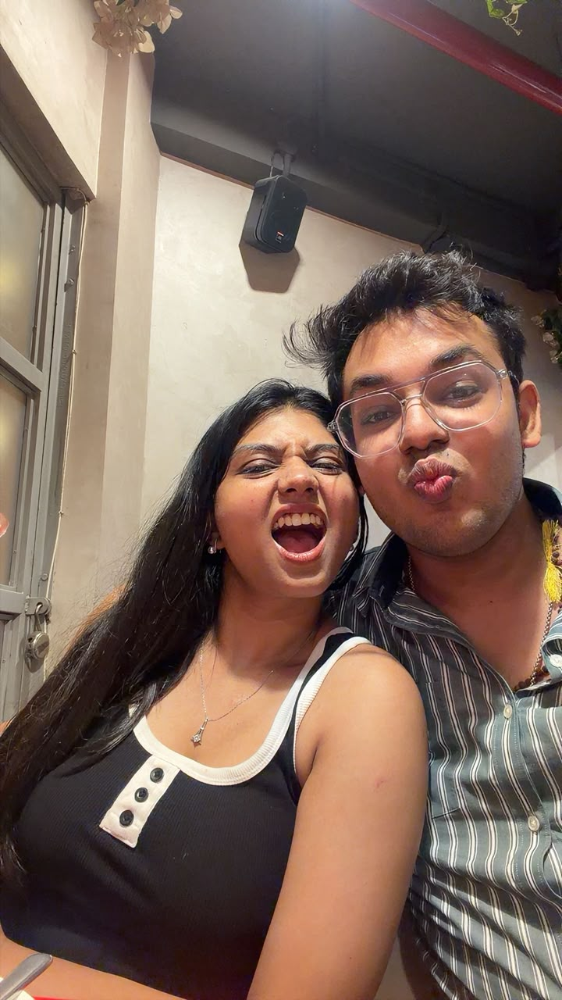
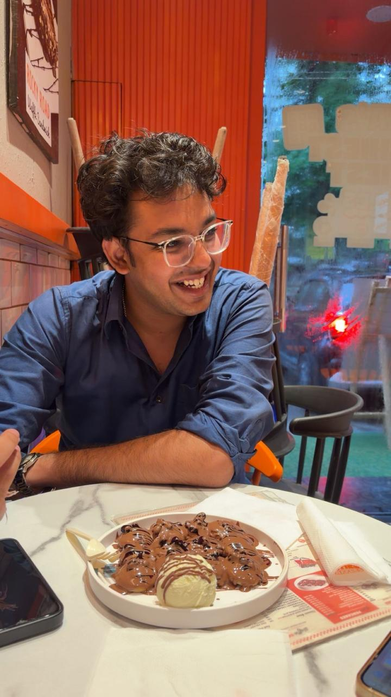
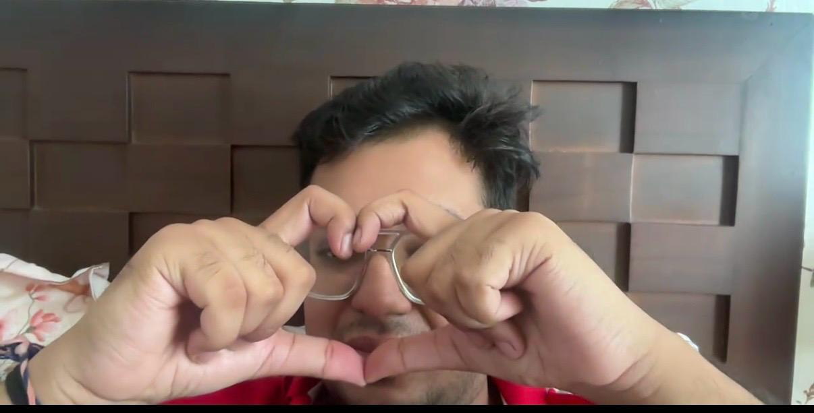
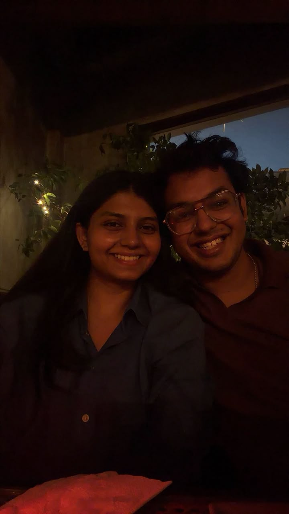
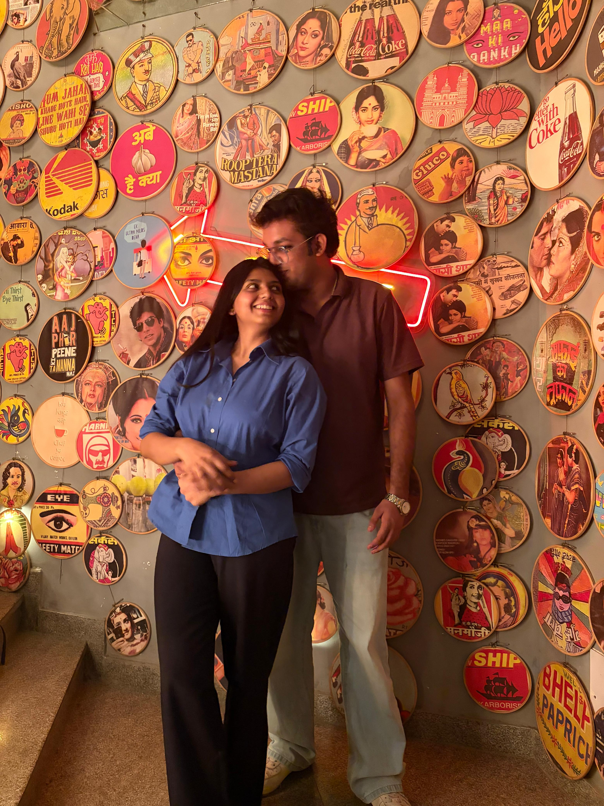

Koko.
You made me a website once.
So… obviously, I had to make one back.
But this one isn't about how we started.
Shubham,
the universally liked one.
That ridiculous big smile. The way you greet people. The way somehow everyone ends up liking you.
Sometimes I'm just like… okay, that's enough. He's my person. 😂

You notice everything.
I notice you.

Chinese food.
If it is Chinese, Koko is already interested.
Honestly, I think this deserves its own personality trait.
Small bites.
Big bites.
You eat like you're carefully rationing the last meal on earth. I eat like the plate personally offended me.
tiny. suspiciously tiny.
we don't have time for small bites.
“Puchpuch always.”
You keep kissing my forehead.
I keep making fun of you for it.
And somehow you keep doing it.

The missing slippers.
You moved my slippers to another room.
I didn't notice for an hour.
And then you had to tell me they were gone.
This is apparently what romance looks like now.

“You never asked me to become someone else just to be loved by you.”
You tell me what you think. You disagree when you do. You support me when you can. And somehow, you still leave room for me to be completely, inconveniently myself.
That means more than I probably say.
Something I don't say out loud enough.
Click the box. You already know I'm going to make you work for it.
You're calm to my chaos.
Being with you feels peaceful. And then completely silly five seconds later.
Scientific conclusion:
You are the calm to my chaos.
And yes, I am being very serious about the Chandler–Monica comparison.

Happy Boyfriend's Day,
Koko.
I don't know exactly what the future looks like.
I just know that having you here has become something very, very special to me.